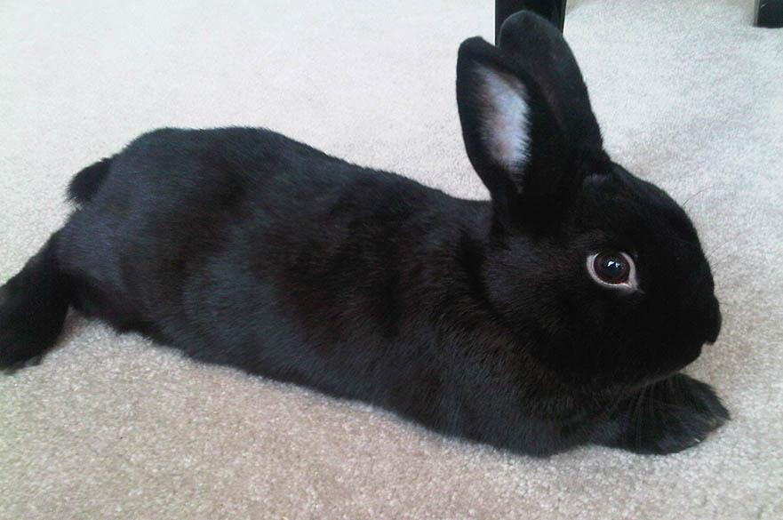
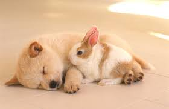
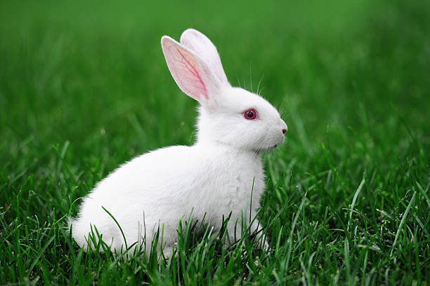

Many things go into your selection of a pet rabbit — where to obtain it; the kind of pets already in your home; your personal preferences with respect to breed, size, color, age, and health; and personality. In all that follows, it is assumed that the rabbit is to be an altered, litter-trained, house pet – the only way a rabbit can really be a pet at all.
Rabbits are not, in general, good pets for young children (see “Getting a Rabbit for your Child“). They can be seriously hurt if not handled properly. For a rabbit and a young child to coexist successfully in a home, the adults in the family should be committed to being the rabbit’s primary caretaker. Care must be taken to always supervise interactions and to provide a safe haven for the rabbit – a place the child cannot get to. This is often more of a commitment than most parents are able to make and keep. For older children, medium to large sized rabbits are recommended but only if the child is mature enough to be responsible. Larger rabbits are more capable of taking care of themselves when they feel insecure. Older children are more capable of handling a rabbit properly and are better able to understand and respect the needs of a rabbit.
Rabbits can get along with most cats and some dogs with some obvious exceptions. If a cat is very large with respect to the rabbit and especially if the cat is an outside cat with a penchant for hunting birds and mice, a small rabbit should not be brought into the family. In general, a cat and rabbit of approximately the same size will get along well, either ignoring each other or becoming friends. If a dog is aggressive toward small animals, a rabbit is not a good addition to the family. Additionally, the dog must respond to and understand basic obedience commands. Kittens and puppies are not good matches with rabbits due to the large amounts of time and attention required for all concerned. Also, rambunctious play on the part of the puppy or kitten could result in an injury to the rabbit (see “Introducing Your Rabbit to Other Pets”).
Of the many breeds, the inexperienced person should seriously reflect on the wisdom of getting one of two breeds which have special needs
English lops have enormously long ears that, because they drag on the ground, are prone to being torn, becoming infected, etc.
Angoras, with their beautiful, long-haired coats, require serious daily grooming and a caregiver experienced in preventing, detecting, and treating hairballs.
People often assume that a small rabbit is a good choice for a child since it will be easier for the child to handle. However, rabbits don’t like to be handled. They tend to struggle if picked up and should never be picked up by a young child in any case. This puts both bunny and child in danger. A large, calm rabbit is a better choice, as long as the adults in the family carefully supervise all of the child’s interactions with the rabbit. Such rabbits will sit beside a child for petting.
The only other consideration with respect to the size of the rabbit you choose (its adult size) is the size of the cage (the bunny’s home) that you can provide. A good rule of thumb for rabbits who will spend significant parts of each day in their cages is that the cage should provide at least one square foot per pound of rabbit or cages should be at least twice the length of the rabbit when the rabbit is fully stretched out and at least as wide and high as the stretched out rabbit is long. For a second bunny, half again as much space should be available. Additional space can be made available in a tall cage by adding a shelf across one end of the cage. The less freedom your rabbit has each day, the larger the cage needs to be. Cages can be expensive so consider choosing your rabbit before purchasing or building a cage. Short of the possibility of medical expense, the cage is the largest part of the cost of keeping a rabbit. Pet stores often sell cages which are inadequate in terms of size and construction.
Colour and coat type are definitely a matter of personal preference. Perhaps the only serious considerations here are to be aware that albino rabbits cannot tolerate bright light and angoras require constant grooming.
People inexperienced with pet rabbits usually assume that baby bunnies are more easily trained to use the litter box than adults. However, like puppies or young children, baby bunnies can’t be expected to have good control of elimination. Even when such control is gained, they may be too busy to be bothered to return to the litterbox – busy as they are exploring their new world.
Adult rabbits are typically easy to train. Instinctively, an adult chooses one or two places for his/her waste, so he/she usually requires a shorter amount of time to be taught to use a litterbox placed in a chosen spot. Training is most easily accomplished by letting the rabbit “choose” his or her spot and place the litterbox in that spot. Keep in mind that you and your pet may have a difference of opinion about where that should be. A good rule of thumb to follow when initiating litterbox training is more litterboxes, more supervision, and less freedom. You will be able to reduce the number of litterboxes as your rabbit develops the habit of using one. Praise, treats, and patience are also essential during training. Additionally, spaying/neutering improves litterbox habits.
In the first year of life, most rabbits go through some personality changes. The precious bunny that was so cute the first few months may suddenly become “the bunny from hell” as his or her hormones begin making themselves felt. A growling, nipping, and apparently angry little beast may seem to inhabit that soft and furry little body. You and your household may be subjected to being sprayed or attacked as your bunny experiences the powerful urges of sexual drive. Even worse, your rabbit may be so unpredictable that you never know whether to expect warm kisses or painful nips. Litter training may become a distant memory. Unless you are one of those special people willing to put up with the turmoil of the first year without losing patience, willing to replace or repair the damage inflicted on your home, and able to believe that your bunny’s “worst” behavior is an expression of affection or at least not a expression of dislike, it may be best to consider an older rabbit who has gone through adolescence and even better, one who has been spayed or neutered.
Health is an important aspect of choosing a pet rabbit. The level of stress to which the rabbit has been subjected prior to coming home with you can mean the difference between starting with a healthy rabbit or one just succumbing to an often fatal, stress-induced illness.
By nature, rabbits hide their stress and illness so as not to appear vulnerable to predators. Most people are unable to rely on the appearance of a rabbit when judging its level of stress unless they have a trained eye. To determine whether the environment is stressful, ask yourself the following questions:
There are, of course, rabbits with medical problems who need homes just as much as healthy ones do. This doesn’t mean that you should feel obligated to adopt such a rabbit, but you should give some thought as to whether you might enjoy providing a home for a “special needs” bunny. Whether you choose to adopt a healthy rabbit or one with special needs, it is extremely important to have access to a knowledgeable veterinarian experienced in treating rabbits. Your rabbit’s life depends on it.
Probably the most important factor to consider when choosing a bunny is his/her personality, for personality will determine your relationship with and the pleasure you derive from your pet. There are no “mean” rabbits, only rabbits who are reacting in a predictable manner to their environment and past or present treatment. Nevertheless, there are definite differences in basic personality and these need to be considered when choosing a rabbit who has the potential to be with you for the next five to ten years.
When looking for a rabbit, it’s wise to become familiar with a variety of them. You can do this by visiting your local shelter or rescue group such as the House Rabbit Resource Network, which is certain to have many rabbits in foster care from which to choose. Handle the rabbits and note the differences in the ways they react to you. Some will cower, others will rush to meet you. Some may growl but warm up when you stroke their noses with the back of your hand. Others may sprawl unconcerned while you pet them. By getting acquainted with different rabbits you will come to appreciate the great variety of their personalities and be better prepared to determine exactly which personality you prefer. On the other hand, don’t be surprised if the very first rabbitcaptivates your heart. They have a way of doing that.